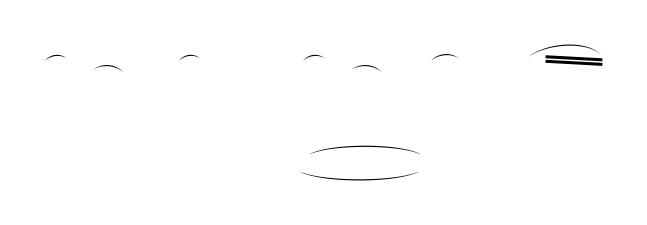

candidate #3
x=174.902
1/8 Down: conf=0.131 d=6.633

candidate #18
x=226.302
1/16 Down: conf=0.165 d=5.054

candidate #18
x=262.165
1/16 Down: conf=0.165 d=5.054
Every MusicSymbolCandidate inside the free-stem endpoint search radius is shown, including candidates rejected by geometry before PCA. The SVG is the exact smooth candidate geometry converted to contours for recognition.
| # | Candidate | Stem | Endpoint distance | PCA candidates | Verdict |
|---|---|---|---|---|---|
| 001 | candidate #3 | Down x=174.902 | 0.868 sp | 1/16 Down: conf=0.168 d=4.939 1/8 Down: conf=0.131 d=6.633 | rejected by PCA |
| 002 | candidate #18 | Up x=226.302 | 0.631 sp | 1/8 Down: conf=0.216 d=3.631 1/16 Down: conf=0.165 d=5.054 | rejected by PCA |
| 003 | candidate #18 | Up x=262.165 | 0.494 sp | 1/8 Down: conf=0.216 d=3.631 1/16 Down: conf=0.165 d=5.054 | rejected by PCA |
| # | Candidate | Stem | Endpoint distance | PCA candidates | Verdict |
|---|---|---|---|---|---|
| 004 |  candidate #184 | Up x=542.697 | 0.63 sp | 1/8 Down: conf=0.216 d=3.631 1/16 Down: conf=0.165 d=5.054 | rejected by PCA |
| 005 |  candidate #184 | Up x=576.272 | 0.496 sp | 1/8 Down: conf=0.216 d=3.631 1/16 Down: conf=0.165 d=5.054 | rejected by PCA |
| # | Candidate | Stem | Endpoint distance | PCA candidates | Verdict |
|---|---|---|---|---|---|
| 006 |  candidate #265 | Up x=138.815 | 0.631 sp | 1/8 Down: conf=0.282 d=2.541 1/16 Down: conf=0.208 d=3.814 | rejected by PCA |
| 007 |  candidate #265 | Up x=179.252 | 0.536 sp | 1/8 Down: conf=0.282 d=2.541 1/16 Down: conf=0.208 d=3.814 | rejected by PCA |
| 008 |  candidate #266 | Up x=179.252 | 0 sp | 1/16 Down: conf=0.233 d=3.284 1/8 Down: conf=0.178 d=4.617 | rejected: PCA direction Down != stem Up |
| 009 |  candidate #268 | Up x=179.252 | 0 sp | 1/8 Down: conf=0.678 d=0.476 1/16 Down: conf=0.211 d=3.736 | rejected: PCA direction Down != stem Up |
| # | Candidate | Stem | Endpoint distance | PCA candidates | Verdict |
|---|---|---|---|---|---|
| 014 |  candidate #367 | Down x=360.568 | 0.185 sp | 1/16 Down: conf=0.198 d=4.038 1/8 Down: conf=0.133 d=6.524 | rejected by PCA |
| # | Candidate | Stem | Endpoint distance | PCA candidates | Verdict |
|---|---|---|---|---|---|
| 015 |  candidate #475 | Down x=138.789 | 0.409 sp | 1/16 Down: conf=0.168 d=4.939 1/8 Down: conf=0.131 d=6.633 | rejected by PCA |
| 016 |  candidate #500 | Up x=191.46 | 0.713 sp | 1/16 Down: conf=0.233 d=3.295 1/8 Down: conf=0.171 d=4.86 | rejected: PCA direction Down != stem Up |
| 017 |  candidate #500 | Up x=228.595 | 0.494 sp | 1/16 Down: conf=0.233 d=3.295 1/8 Down: conf=0.171 d=4.86 | rejected: PCA direction Down != stem Up |
| # | Candidate | Stem | Endpoint distance | PCA candidates | Verdict |
|---|---|---|---|---|---|
| 018 |  candidate #597 | Down x=397.447 | 1.107 sp | 1/16 Down: conf=0.234 d=3.28 1/8 Down: conf=0.223 d=3.489 | rejected by PCA |
| 019 |  candidate #576 | Up x=450.119 | 0.673 sp | 1/16 Down: conf=0.233 d=3.295 1/8 Down: conf=0.171 d=4.86 | rejected: PCA direction Down != stem Up |
| 020 |  candidate #576 | Up x=487.253 | 0.495 sp | 1/16 Down: conf=0.233 d=3.295 1/8 Down: conf=0.171 d=4.86 | rejected: PCA direction Down != stem Up |
| # | Candidate | Stem | Endpoint distance | PCA candidates | Verdict |
|---|---|---|---|---|---|
| 021 |  candidate #651 | Down x=525.122 | 1.25 sp | — | rejected before PCA: width 0sp < 0.12sp |
| 022 |  candidate #619 | Up x=590.767 | 0 sp | 1/16 Down: conf=0.234 d=3.282 1/8 Down: conf=0.178 d=4.618 | rejected: PCA direction Down != stem Up |
| 023 |  candidate #621 | Up x=590.767 | 0 sp | 1/8 Down: conf=0.678 d=0.476 1/16 Down: conf=0.211 d=3.736 | rejected: PCA direction Down != stem Up |
| 024 |  candidate #624 | Up x=629.934 | 0 sp | 1/8 Down: conf=0.193 d=4.186 1/16 Down: conf=0.190 d=4.26 | rejected by PCA |
| 025 |  candidate #626 | Up x=629.934 | 0 sp | 1/16 Down: conf=0.279 d=2.584 1/8 Down: conf=0.173 d=4.775 | rejected: PCA direction Down != stem Up |
| 026 |  candidate #627 | Up x=629.934 | 0 sp | 1/16 Down: conf=0.191 d=4.239 1/8 Down: conf=0.190 d=4.273 | rejected by PCA |
| 027 |  candidate #628 | Up x=629.934 | 0.623 sp | 1/16 Down: conf=0.233 d=3.295 1/8 Down: conf=0.171 d=4.86 | rejected: PCA direction Down != stem Up |
| # | Candidate | Stem | Endpoint distance | PCA candidates | Verdict |
|---|---|---|---|---|---|
| 028 |  candidate #661 | Up x=175.183 | 0 sp | 1/16 Down: conf=0.234 d=3.283 1/8 Down: conf=0.178 d=4.617 | rejected: PCA direction Down != stem Up |
| 029 |  candidate #663 | Up x=175.183 | 0 sp | 1/8 Down: conf=0.678 d=0.476 1/16 Down: conf=0.211 d=3.736 | rejected: PCA direction Down != stem Up |
| # | Candidate | Stem | Endpoint distance | PCA candidates | Verdict |
|---|---|---|---|---|---|
| 030 |  candidate #694 | Up x=248.686 | 0.673 sp | 1/8 Down: conf=0.236 d=3.237 1/16 Down: conf=0.207 d=3.821 | rejected by PCA |
| 031 |  candidate #694 | Up x=318.88 | 0.494 sp | 1/8 Down: conf=0.236 d=3.237 1/16 Down: conf=0.207 d=3.821 | rejected by PCA |
| 032 |  candidate #698 | Up x=318.88 | 0 sp | 1/16 Down: conf=0.233 d=3.283 1/8 Down: conf=0.178 d=4.617 | rejected: PCA direction Down != stem Up |
| 033 |  candidate #700 | Up x=318.88 | 0 sp | 1/8 Down: conf=0.678 d=0.476 1/16 Down: conf=0.211 d=3.736 | rejected: PCA direction Down != stem Up |
| # | Candidate | Stem | Endpoint distance | PCA candidates | Verdict |
|---|---|---|---|---|---|
| 036 |  candidate #990 | Up x=667.73 | 0.924 sp | 1/16 Down: conf=0.221 d=3.523 1/8 Down: conf=0.213 d=3.696 | rejected by PCA |
| # | Candidate | Stem | Endpoint distance | PCA candidates | Verdict |
|---|---|---|---|---|---|
| 037 |  candidate #508 | Down x=138.789 | 0.06 sp | 1/16 Down: conf=0.198 d=4.038 1/8 Down: conf=0.133 d=6.524 | rejected by PCA |
| # | Candidate | Stem | Endpoint distance | PCA candidates | Verdict |
|---|---|---|---|---|---|
| 038 |  candidate #582 | Down x=397.447 | 0.309 sp | 1/16 Down: conf=0.198 d=4.038 1/8 Down: conf=0.133 d=6.524 | rejected by PCA |
| 039 |  candidate #599 | Down x=397.447 | 1.107 sp | 1/16 Down: conf=0.233 d=3.295 1/8 Down: conf=0.171 d=4.86 | rejected by PCA |
| # | Candidate | Stem | Endpoint distance | PCA candidates | Verdict |
|---|---|---|---|---|---|
| 040 |  candidate #708 | Down x=241.793 | 0.513 sp | 1/16 Down: conf=0.134 d=6.475 1/8 Down: conf=0.091 d=10.038 | rejected by PCA |
| 041 |  candidate #711 | Down x=241.793 | 1.041 sp | — | rejected before PCA: height 0sp < 0.2sp |
| 042 |  candidate #719 | Up x=275.389 | 0 sp | 1/8 Down: conf=0.254 d=2.93 1/16 Down: conf=0.199 d=4.035 | rejected by PCA |
| 043 |  candidate #720 | Up x=275.389 | 0 sp | 1/8 Down: conf=0.284 d=2.525 1/16 Down: conf=0.215 d=3.644 | rejected by PCA |
| 044 |  candidate #719 | Up x=302.504 | 0.52 sp | 1/8 Down: conf=0.254 d=2.93 1/16 Down: conf=0.199 d=4.035 | rejected by PCA |
| # | Candidate | Stem | Endpoint distance | PCA candidates | Verdict |
|---|---|---|---|---|---|
| 045 |  candidate #743 | Down x=524.361 | 1.079 sp | 1/16 Down: conf=0.238 d=3.21 1/8 Down: conf=0.140 d=6.145 | rejected: recognized contour is not near free stem endpoint |
| # | Candidate | Stem | Endpoint distance | PCA candidates | Verdict |
|---|---|---|---|---|---|
| 046 |  candidate #844 | Down x=228.313 | 1.173 sp | 1/16 Down: conf=0.295 d=2.388 1/8 Down: conf=0.204 d=3.896 | rejected by PCA |
| # | Candidate | Stem | Endpoint distance | PCA candidates | Verdict |
|---|---|---|---|---|---|
| 047 |  candidate #897 | Down x=413.219 | 1.164 sp | 1/16 Down: conf=0.295 d=2.388 1/8 Down: conf=0.204 d=3.896 | rejected by PCA |


{kind=link}
{kind=link}
{kind=link}